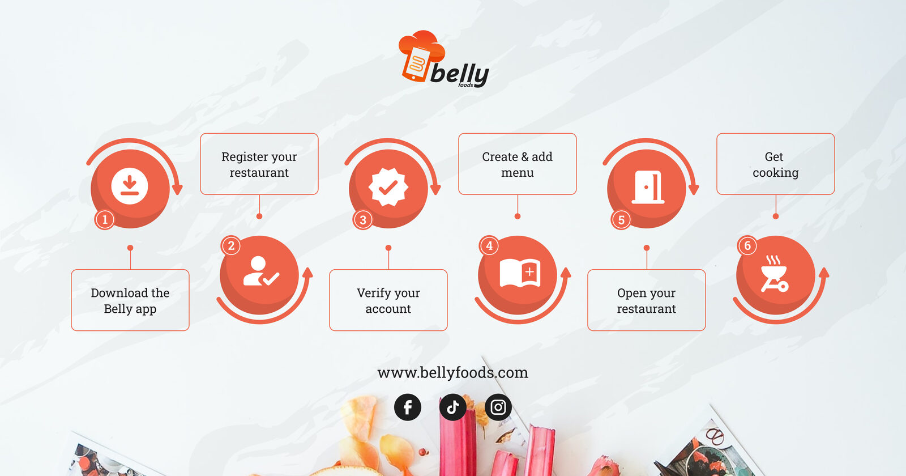
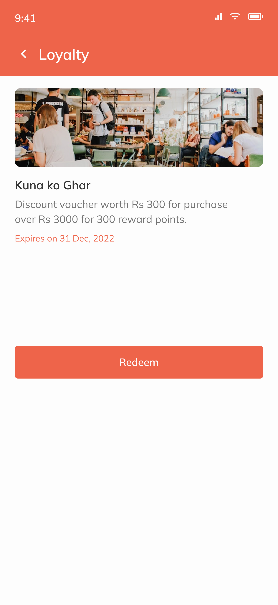
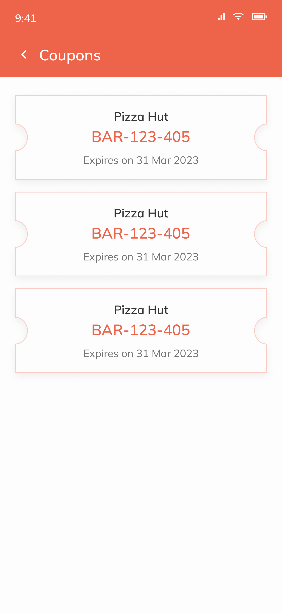
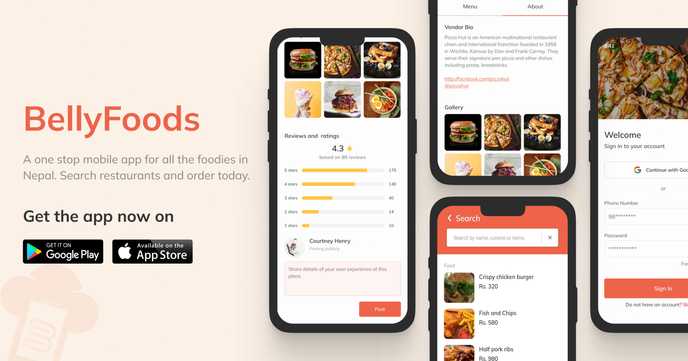
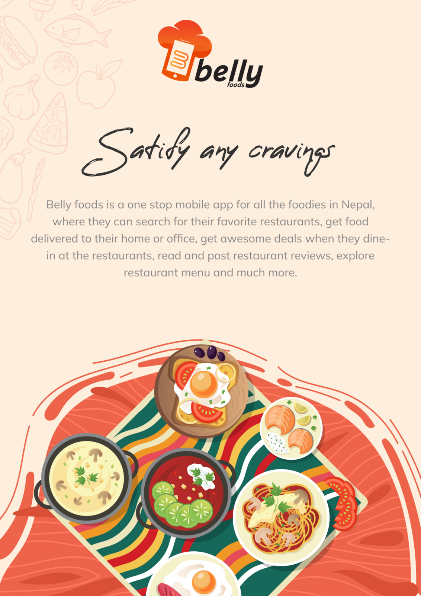
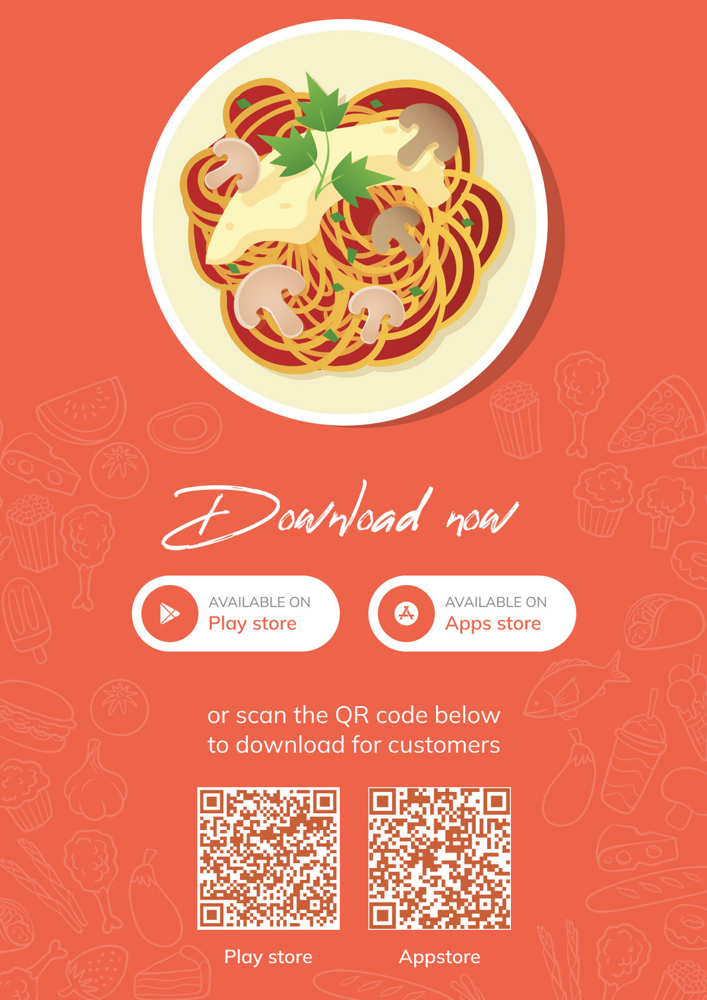
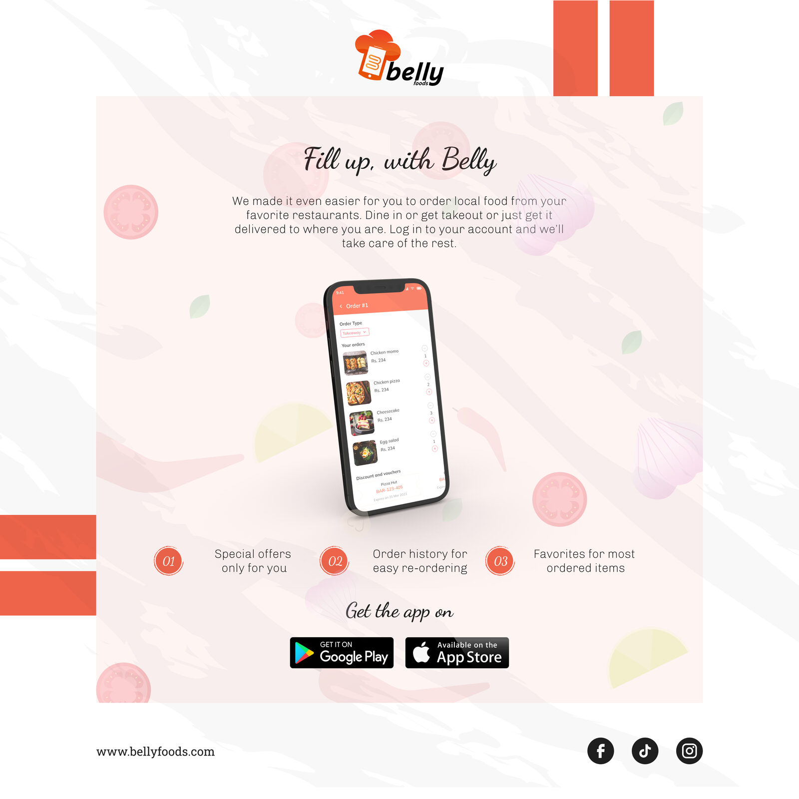
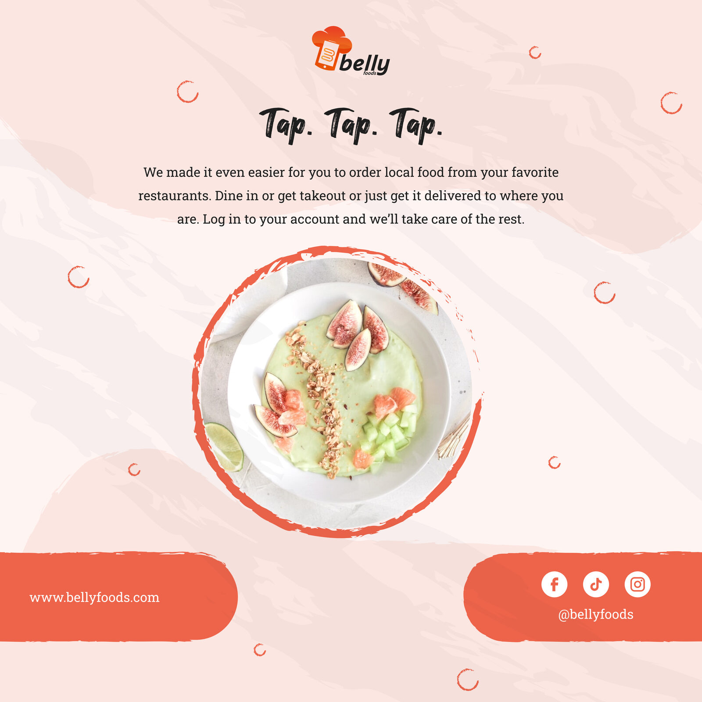
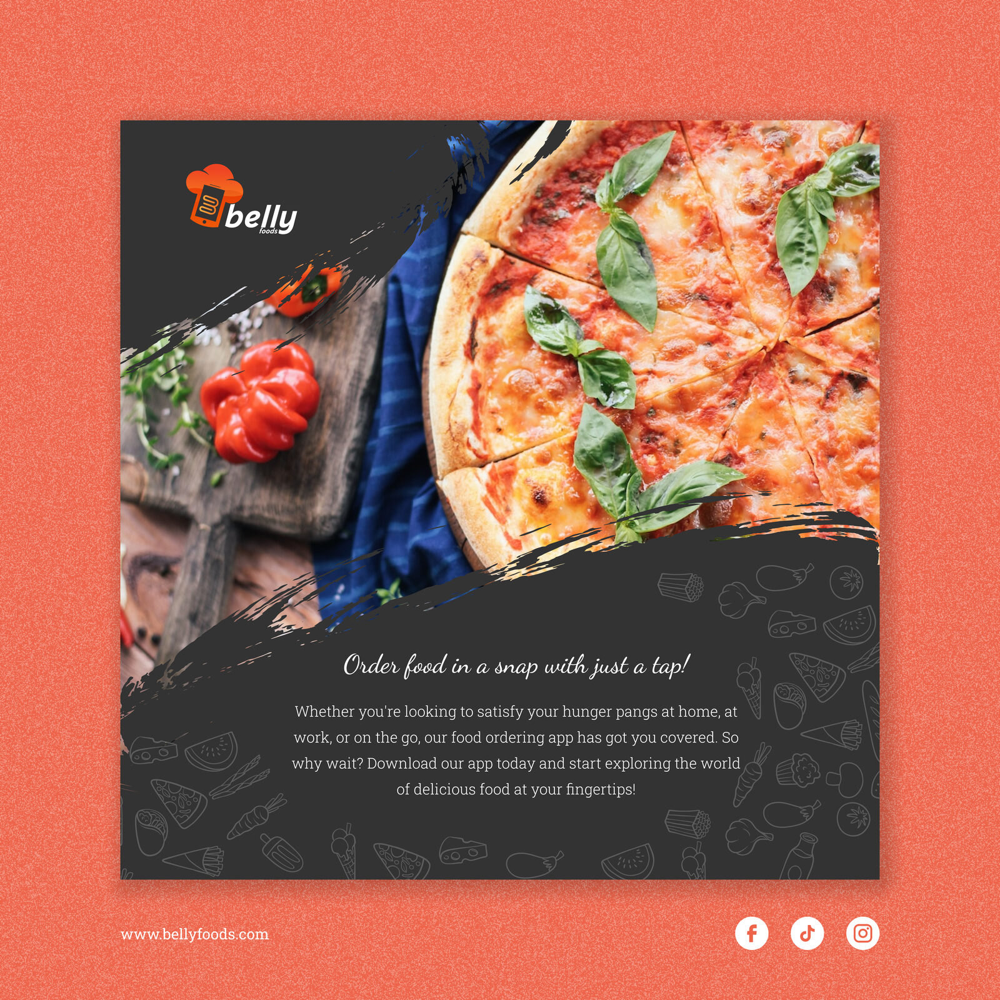

Belly Foods
A two-sided food-ordering app built to give Nepal's restaurants a fairer, lower-commission alternative to the dominant delivery platform.

Overview
Belly is a two-sided food-ordering app for Nepal: one experience for customers ordering food, and a separate one for restaurant vendors running their business. I led design on a three-person team, working alongside a frontend and a backend developer to take the product from concept to a working build.
At a glance
- Role: Sole product & UX designer
- Team: 1 designer, 1 frontend dev, 1 backend dev
- Platform: iOS & Android — customer + vendor apps
- Scope: Research, IA, user flows, UI, prototyping
- Status: Pre-launch — secured verbal interest from local restaurants to pilot
The problem
Nepal's food delivery market was dominated by Foodmandu and Bhoj, and both sides of the market were unhappy. Restaurants were paying roughly 22% commission to Foodmandu — the highest take rate in the country — on top of optional fees for sponsored visibility, and were given little in return: no real tooling for menu, stock, or order management. Customers were unhappy too: surveys at the time reported around 70% dissatisfaction with the market leader. The complaints were consistent — multi-hour delays, menus with no photos, payment flows that crashed mid-checkout, opaque order status, and customer support that defended the restaurant when something went wrong.
Belly's bet was to design for both sides of that frustration: take a smaller cut so restaurants kept more, give them the operational tooling the incumbents didn't, and rebuild the customer experience around the things customers were actually losing trust over — visual menus, transparent status, payment that worked.

Designing for two very different users
The biggest early decision was to build Belly as two distinct experiences rather than one app stretched across both audiences. Their jobs barely overlap: customers only need to discover restaurants, order, and pay, while vendors run an operation — accepting orders, managing pickup and delivery, editing menus, and keeping stock and availability current. Forcing both into one interface would have buried the few things customers care about under the many things vendors do.
Customer side
Discover and search restaurants, browse menus, order for take-out, dine-in, or delivery, track orders in real time, and earn loyalty rewards — kept deliberately simple and fast.
Vendor side
Manage menus and stock, set availability, accept and track orders, and coordinate pickup and delivery — an operational dashboard built for speed and control.
What the incumbents were getting wrong
I started by digging into Foodmandu and Bhoj — reading user reviews on the App Store and Play Store, market reporting on their commission structure, and first-hand conversations with restaurants we knew personally. A consistent picture emerged on both sides of the marketplace.
Customer-side complaints
- Multi-hour delivery delays vs. quoted times
- Menus with no photos — hard to choose unfamiliar dishes
- App freezes & payment flow crashes (esp. eSewa)
- Double charges with slow or no refunds
- Opaque order status, no way to cancel
- Support that defended the restaurant when something went wrong
Vendor-side complaints
- ~22% commission on every order — highest in market
- Extra fees to get visibility in the app
- No real tools for menu, stock, or availability
- No way to pause orders during a kitchen rush
- Pickup vs. delivery handling baked into one rigid flow
Two things stood out. First, customer frustration wasn't about missing features — the incumbents had search, tracking, history, all of it. It was about broken trust: the order doesn't show up on time, the payment fails, the menu picture isn't there to confirm what you're buying. Second, restaurants weren't the customer of these platforms; they were the squeezed middle. They paid the most and got the least.
How the research shaped Belly
Those findings became Belly's design principles. Every screen had to answer back to a real complaint we'd heard.
Visual-first menus
Photo on every item, prominent and required — not the text-only lists customers were getting frustrated with elsewhere.
Transparent order status
Status surfaced clearly at every step, with empty and edge-case states designed so customers were never staring at a blank screen.
Vendor self-service
A dedicated vendor app to manage menus, toggle stock, pause orders, and choose pickup vs. delivery — the tooling incumbents didn't ship.
Customer user flow
The customer flow stays deliberately short — from browsing restaurants to paying for an order. Edge states (no internet, location off, empty search) were designed in from the start, since "blank screen with no explanation" was one of the trust-breakers we'd heard about in research.

Vendor onboarding flow
Vendors had to feel the same low-friction entry the customer side promised. Six steps from app download to taking the first order — register the restaurant, verify the account, build the menu, open the shop, start cooking. The same flow doubled as a marketing leaflet we used in vendor conversations to show how light the lift was compared to onboarding with the incumbents.

Final Screens
The screens highlight the key features and functionalities of the app, such as a personalized menu, easy navigation, and a clear order summary. Additionally, we incorporated user feedback throughout the design process, ensuring that the app is intuitive and meets the needs of its users.








UI Design Elements
Colour
ED644A
FCB316
333333
737373
FDFDFD
Tools used
Figma for design

Notion for documentation

Icons from Google Material Design
Images from Unsplash
Brand & marketing
Beyond the product itself, I designed Belly's brand voice and the marketing assets we used to introduce it — social posts, printed leaflets for vendor conversations, and download CTAs. Treating brand and product as one system meant a vendor saw the same Belly whether they were holding a leaflet, scrolling Instagram, or opening the app to take their first order.

Web banner — hero composition with in-app screens.

Brand leaflet — introducing Belly to customers.

Download leaflet — printed for partner restaurants.

IG — product features.

IG — brand voice.

IG — download CTA.
Outcome
Belly reached a working build with both apps designed end-to-end — visual menus, transparent status, payment flow, and a vendor dashboard for menu, stock, and pickup/delivery handling. The design answered directly to the customer- and vendor-side pains we'd surfaced in research.
We secured verbal commitments from several local restaurants willing to pilot. That was the strongest signal we got: the lower-commission, vendor-tooling pitch was compelling enough to make restaurants squeezed by incumbents say yes. The project ultimately didn't reach a public launch, so the design was never validated with live users at scale — something I'm upfront about.
What I'd take into the next project
- Two audiences, two products. Splitting customer and vendor into separate experiences kept each one focused. I'd make that call again, and earlier.
- Design serves the business model. Belly's real edge was its pricing, not its screens — the design's job was to make that advantage feel effortless on both sides.
- Capture the research. We made decisions from real conversations but kept few artifacts. Next time I'd document findings as I go so the rationale holds up later.